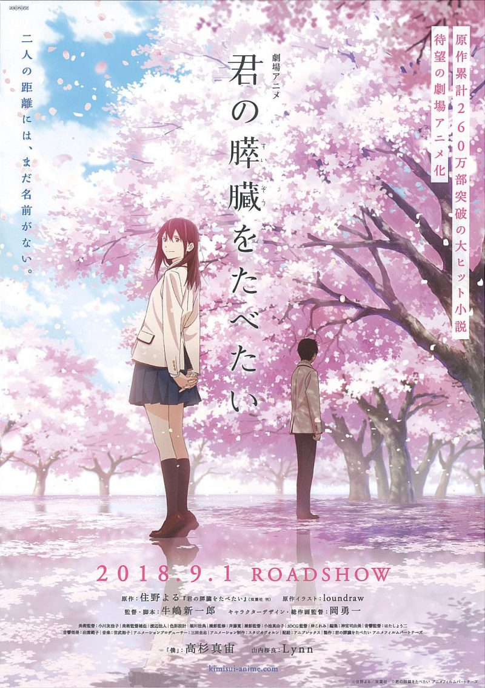
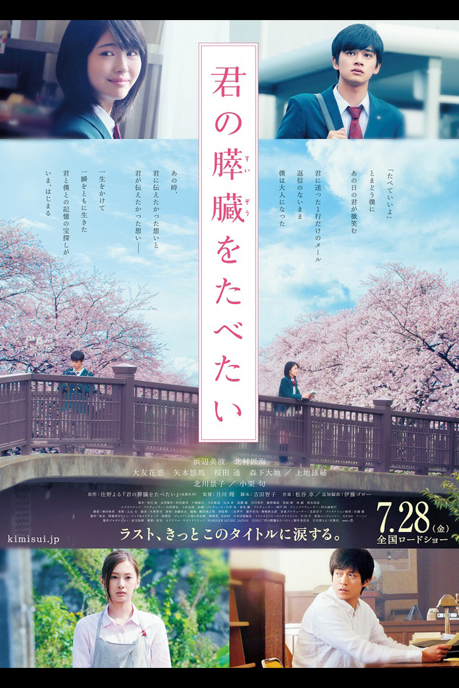

改編作品比較
《我想吃掉你的胰臟》除了原著小說外，還有改編動畫電影、真人電影等相關作品，其中動畫電影和原著小說內容基本相同，而真人電影在原故事基礎上做了不少的小改動，不過並不影響這個故事的精彩，尤其我個人私心很喜歡真人電影版裡，飾演女主角山內櫻良的演員濱邊美波(浜辺美波)的表現，將女主角在小說中的形象很完美地展現在大螢幕上，在這邊就對其相異之處做簡單對比：
一、新增劇情：
真人電影版新增了12年後的劇情，穿插過去和未來的時間軸來敘述這個故事。
二、男主角的名字：
男主角的名字「志賀春樹」，在小說中一直到相當後面才出現，在此之前從女主角山內櫻良的視角出發多是以「交情好的同學」、「知道秘密的同學」、「？？？？？？」來描述，電影部分則在開始不久時就能發現男主角的名字，但出現頻率仍然極低，保有小說原有的氛圍。
三、敘事角度：
小說是以男主角的第一人稱事角出發，而電影則是第三人稱視角為主，加上男女主角等人的旁白為輔呈現。
四、口香糖同學
在電影中能看到一位男同學時不時會出現在男主角旁邊並問「要不要口香糖（ガムいる？）」，是少數會關切男主角的班上同學，而隨著故事的進行，男主角從拒絕其好意到接受了口香糖，就能從中觀察到男主角心境上已經有所變化（被女主角影響而改變）。小說中則對口香糖同學沒有過多著墨。
五、愛情要素
比起原著小說，電影盡量的去除掉愛情的要素，像是兩人去神社求籤時，小說中男主角抽到的是「良緣將至」，而電影版則只有提到「吉」，又或是在山內櫻良在共病文庫中，記載第一次遇到男主角的想法，小說中是「立刻喜歡上他」，而電影則是「覺得不可思議，世界上真的有這種人嗎?」等，我個人覺得小說的戀愛感不錯，但電影這樣的表現手法也相當有意思。後面心得的部份會再稍微提一點關於這部份的想法。
六、山內櫻良的遺言
在小說中是寫在共病文庫的最後的草稿，寫給家人、同學、身邊的人、恭子（山內櫻良的好朋友）、男主角。電影中則是寫在信上夾在圖書館的書中，寫給恭子及男主角各一封。
其他還有許多小細節都有所相異之處，在這邊就不全部列出，有興趣的人可以小說、動畫電影、真人電影都找來看看，自己發現其中的不同吧！
| 原著小說 | 動畫電影 | 真人電影 |
|---|---|---|
 |

|

|
| 2015年06月19日 | 2018年09月01日 | 2017年07月28日 |
| 288頁(依版本不同可能不同) | 108分鐘 | 115分鐘 |
| 双葉社 | ANIPLEX | 東宝 |
| --- | Lynn、高杉真宙、藤井幸代 | 浜辺美波、北村匠海、大友花恋、小栗旬、北川景子 |
| 註：以上資料皆以日本、日文版為主 | ||